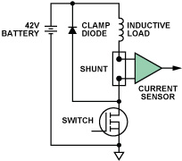
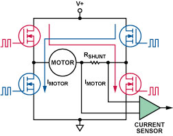
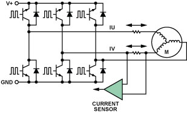
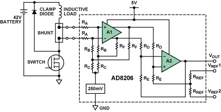
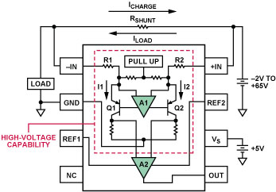
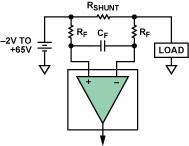
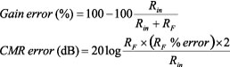

Download
this article in PDF format. (292K)
Download
this article in PDF format. (292K)
High-Side Current Sensing: Difference Amplifier vs. Current-Sense Amplifier
By Henri Sino
Accurate
high-side current sensing is necessary in many applications, including
motor control, solenoid control, and power management (for example, dc-to-dc
converters and battery monitoring). In such applications, monitoring of
current on the high side—instead of the return—permits improved diagnostic
capabilities, such as determining shorts to ground and continuous monitoring
of the recirculation-diode current—and maintains the integrity
of the ground path by avoiding the introduction of shunt resistance. Figures
1, 2, and 3 depict typical high-side current-shunt configurations for
solenoid- and motor control.

Figure 1. High-side shunt in typical solenoid control.

Figure 2. High-side shunt in H-bridge motor control.

Figure 3. High-side shunts in 3-phase motor control.
In all configurations shown above, the pulse-width-modulated (PWM) common-mode voltage at the shunt resistor—which monitors the load current—is swinging over the whole range from ground to battery. This PWM input signal will have a period, frequency, and rise/fall time established by the control signal from the power stage to the FET. Therefore, the difference-measurement circuitry that monitors the voltage across the shunt resistor will require the stringent combination of very high common-mode rejection and high-voltage handling capability, plus high gain, high accuracy, and low offset—all in order to deliver a true representation of the load-current value.
In solenoid control (Figure 1) that uses a single control FET, the current is always flowing in the same direction, so a unidirectional current sensor will be sufficient. In motor-control configurations (Figures 2 and 3), placing the shunt on the motor phase means that current in the shunt resistor could flow both ways; therefore, a bidirectional current sensor is necessary.
The designer who studies the choices for the high-side current-sensing function will find a variety of options from many semiconductor vendors. However, a key finding will be that the choices among these integrated-circuit devices can be classified in terms of two quite different high-voltage architectures: current-sense amplifiers and difference amplifiers.
We will identify and explain here some of the key differences between these architectures to help the designer in need of high-side current sensing to choose a device best-suited to the application. We will compare two high-voltage parts, the AD8206 bidirectional difference amplifier and the AD8210 bidirectional current-sense amplifier. Both devices offer the same pinout, and both perform high-side current-shunt monitoring, yet their specifications and architectures are different. So, how does one consider which device is best-suited for the application?
HOW THEY WORK
The AD8206
(Figure 4), an integrated high-voltage difference amplifier, withstands
common-mode voltages up to 65 V by using input resistors to attenuate
the input voltage by 16.7:1 so as to keep the common-mode voltage within
the input range of amplifier A1. Unfortunately, the input resistance network
also attenuates the differential signal by the same value. To achieve
the AD8206’s featured gain of 20 V/V, amplifiers A1 and A2 must actually
amplify the differential signal by approximately 334 V/V.

Figure 4. AD8206 simplified schematic.
This device implements bidirectional input measurements by offsetting the output amplifier to a suitable voltage within the supply range. The offset is achieved by applying an external low-impedance voltage to a precisely trimmed resistance divider connected to the positive input of A2. A useful feature of this device is its ability to correctly amplify the differential input voltage when the common-mode voltage goes negative by as much as 2 V—a consequence of the 250-mV common-mode bias circuit shown in the figure.
The AD8210 (Figure 5), a recently introduced high-voltage current-sense amplifier, offers the same functional relationship as the AD8206 and uses the same pin connections. However, it works in a different way, and the resulting specifications are unlike those of a difference amplifier.

Figure 5. AD8210 functional diagram.
An obvious distinction is that the input structure does not rely on a resistive attenuation network to deal with the large common-mode voltage. The input amplifier comprises high-voltage transistors, available on the XFCB IC fabrication process. Because the VCE breakdown of all transistors exposed to this voltage is beyond 65 V, the common-mode voltage at the input can be as great as 65 V.
Current-sense amplifiers such as the AD8210 amplify the small differential input voltage in the following manner. The input terminals are connected to the differential amplifier, A1, by R1 and R2. A1 nulls the voltage appearing across its own input terminals by adjusting the current through R1 and R2 with transistors Q1 and Q2. When the input signal to the AD8210 is 0 V, the currents in R1 and R2 are equal. When the differential signal is nonzero, the current increases through one of the resistors and decreases in the other. The current difference is proportional to the size and polarity of the input signal. The differential currents through Q1 and Q2 are converted to a ground-referenced differential voltage via two internal precision-trimmed resistors. This voltage can then be amplified by amplifier A2, this time using low-voltage transistors powered by the device’s 5-V (typically) supply, to produce the final output with an overall gain of 20.
Current-sense amplifiers with this architecture are generally useful only if input common-mode voltage remains above 2 V or 3 V, and if the application doesn’t require that the input common-mode voltage go all the way to ground (or below). However, the AD8210 uses a pull-up circuit to hold the inputs of amplifier A1 near the 5-V power supply, even when the input common-mode drops below 5 V, and all the way down to –2 V. Thus, accurate differential input-voltage measurement is possible at common-mode voltages well below the device’s 5-V supply.
It is apparent that current-sense amplifiers and difference amplifiers perform the same function while operating quite differently. A difference amplifier attenuates high input voltages to bring the signal to a level the amplifier can tolerate. A current-sense amplifier converts the differential input voltage to a current, and then back to a ground-referenced voltage; its input amplifier is able to withstand large common-mode voltages due to its high-voltage manufacturing process. The disparity between the two architectures naturally leads to performance differences that designers must consider when choosing a high-side current-monitoring solution. Manufacturers’ data sheets typically provide most of the information needed to make the right judgment on which type of device to use, based on accuracy, speed, power, and other parameters. However, some key differences inherent in device architecture are not immediately obvious when reading a data sheet, yet they can be essential design considerations. The following are key points engineers must be aware of to arrive at the best solution.
Bandwidth: Because of the input attenuation, the bandwidth of many difference amplifiers is typically about one-fifth that of current-sense amplifiers. However, the lower bandwidth of the difference amplifier is still sufficient for most applications. For example, many solenoid-control applications run at less than 20 kHz, but motor control typically must run at or above 20 kHz due to noise considerations. Solenoid control typically involves looking at the average current, an application for which the bandwidth of difference amplifiers is well suited. For motor control, on the other hand, instantaneous current is key, especially when measuring on the motor phase; therefore, the current-sensor architecture, with its higher bandwidth, will yield a truer representation of the actual motor current.
Common-Mode Rejection: The difference in the input structure between these two architectures also leads to a difference in CMR performance. The difference amplifiers typically have trimmed input resistors with a tracking accuracy of 0.01%. This degree of matching typically results in a guaranteed 80-dB CMR at dc. The current-sense amplifiers, with their transistor input structure, can obtain a better match, so that CMR, no longer dependent on input resistor matching, can typically be specified above 100 dB, except at low values of common-mode voltage. For example, the AD8210 offers the same 80 dB as a difference amplifier when the input common-mode voltage is less than 5 V. At this voltage range, the input structure becomes resistive, due to the internal pull-up circuit mentioned above; so, the CMR once again becomes a function of the 0.01% precision-trimmed resistor matching. Over the whole range, though, the current-sense architecture will offer better common-mode rejection.
Effect of External Input Filtering: If input filtering is to be used in a high-side current-sensing application, the architecture can be highly influential. An input filter, intended to smooth out effects of input noise and current spikes, is typically implemented as shown in Figure 6.

Figure 6. Input filter options.
Since each part, regardless of its architecture, has some trimmed input resistance, any external resistance added in series will produce mismatches leading to both gain- and CMR errors, typically calculated as follows (Rin is the specified amplifier input resistance):

The
difference amplifiers have an input resistance greater than 100 kohm. For the AD8206, where Rin = 200
kohm, if a
The current-sense amplifiers, while having much higher common-mode input impedance, feature input series resistors typically lower than 5 kohm, in order to convert the differential input voltage into a current. For the AD8210, the equations above must be recalculated using Rin = 3.5 kohm (differential input impedance). In this case, the additional gain error due to the filter resistors could be as high as 5.4%! Also, the CMR could drop down to 59 dB, assuming a worst-case external resistor mismatch. This is a major blow to performance for a device whose typical accuracy provides a maximum total error of less than 2%.
Therefore, care must be used when introducing input filters with current-sense architecture. Use a filter resistor that is less than 10 ohms when the internal resistance is 5 kohm or less. This will ensure that the high original accuracy of the current-sense amplifier is maintained. As shown above, a wider range of input filter resistor values can be used with a difference amplifier, as the high value input resistors are less susceptible to external mismatching.
Overdriving the Inputs: In high-side current-sensing applications, the designer must carefully consider potential events that could cause the amplifier to operate outside of its specified range. In typical use, the inputs to the amplifier are meant to differ by only the few hundred millivolts caused by the flow of load current through the shunt resistor, but could the device survive fault conditions where several volts appear across the inputs? In such cases the difference amplifier architecture is inherently more robust and more likely to continue to function as expected once the system is back in order. The input resistor network can simply source the current to ground; at 65 V, the AD8206, with 200 kohm per input, will have 325 μA flowing to ground.
If the current-sense architecture is used, the designer must be concerned with such potential problems. In the case of the first example, a device like the AD8210 would not be able to survive large voltage swings across the inputs. Such devices usually include an ESD protection diode between the inputs. This diode is forward-biased by a voltage difference greater than about 0.7 V. The actual breaking point of this diode varies, but large differential voltages, such as those available from an automotive battery, typically leads to damage to the device due to electrical overstress.
Negative Voltage Protection: In many cases it is necessary to protect the current sensor against reversed battery voltage, especially in automotive applications. The difference amplifier’s resistance-bridge input is potentially an important survival factor. However, designers must check the device’s absolute ratings to ensure that the input ESD diodes are also designed to turn on, but only at large negative voltages.
However, the current-sense architecture is not optimal in such cases because the input amplifier and its corresponding input transistors will be directly connected to the large negative voltage. Because the inputs should not be subjected to large negative dc voltage, the input ESD diodes of current sense amplifiers are typically designed to turn on just outside the specified low end of the input voltage range.
In addition to negative dc voltage, however, such current monitors can also be subject to negative input transients. This is typically the case in a PWM system, where the current-shunt monitor’s input common-mode voltage swings from ground to battery as the control FET switches on and off. Again, it is essential to carefully consider the absolute maximum ratings, which are principally determined by the device’s input ESD diodes. The difference amplifiers, as before, are protected by the high input resistance and are essentially impervious to the negative transients; therefore, the ESD diodes typically are designed to clamp at large negative voltages. But when the current-sense architecture is used, negative transients of even very short duration can trip the input ESD protection, which is designed to turn on at voltages close to the input common-mode rating of the device. Although such pulses typically do not carry enough energy to damage the ESD cells of the AD8210, performance in this regard will vary from device to device. To ensure that no complications arise, this parameter should be tested in the actual system.
Input Bias Current: In applications where power management is important and even small leakages must be considered, the differing input structures of the two architectures require that input bias current be considered. For example, in a battery-current sensing system, both architectures will monitor the current on the high side. However, when the system is off and the power supply to the current monitor is off, while the inputs are still connected to battery, the path to ground inherent in the resistive input network of a difference amplifier (like the AD8206) will require a bias current that continues to drain current from the battery. On the other hand, with their very high input common-mode impedance (>5 Mohm for the AD8210), devices using the current-sense architecture will not drain the battery current, since almost no current will flow via its inputs to ground.
CONCLUSION
High-side
current sensing is a pervasive requirement in automotive, telecom, consumer,
and industrial applications. Integrated high-voltage difference- and current-sense
amplifiers are now offered in the marketplace to perform this function.
Depending on the accuracy- and survival requirements in the application,
systems engineers need to look carefully at which type of current sensor
is best suited for their system. Typical considerations are summarized
in the table below.
Both types of current monitors can do the job, yet the advantages offered by their different architectures are accompanied by distinct trade-offs. For instantaneous current monitoring, the wide bandwidth of current-sense amplifiers is most suitable, while applications monitoring average current can be easily served by a difference-amplifier topology. In addition, power-management applications sensitive to current consumption benefit by a current-sense amplifier with its minimal input power-off bias-current drain. However, the input structure of high-side current sense amplifiers may limit performance when implementing external filters and require careful scrutiny to ensure that their absolute input ratings are not exceeded in hostile application environments.
| Features |
Current-Sense
Amplifiers
|
Difference
Amplifiers
|
| Speed is Ideal for Monitoring... |
Instantaneous
current
|
Average
current
|
| Input CMR (DC) |
>100
dB
|
About
80 dB
|
| Input CMR (PWM) |
About
80 dB
|
About
80 dB
|
| “Off” Input Bias-Current Consumption |
Very
low
|
Continuous
leakage in input resistance divider
|
| External Filtering |
Primarily
“post”
|
“Pre”
or “post”
|
| Input Stress Susceptibility |
External
stresses need careful consideration
|
Typically
robust
|
|
THE
AUTHOR |
|
Open a Dialogue Question the authors. Share information with your colleagues. Leave feedback for the editors. What did you think of this article? Was it useful, timely, well written? Would you like to see more articles on this topic? Please leave your comments at Analog Diablog. |
Copyright 1995-2010 Analog Devices, Inc. All rights reserved.